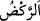

11. Zâlim olan nice beldeyi kırıp geçirdik; arkasından da nice başka topluluklar
vücuda getirdik.
Halkı “Zâlim olan nice beldeyi kırıp geçirdik;” “, param parça etmek,
ufalamak, düzenini/insicâmını tamamen yok etmek demektir. Açıktır ki bu, ilâhî gazabın
kuvvetine ve öfkenin şiddetine delâlet eder. Yâni ey Kureyş halkı, sizin gibi halkları
Allâh’ın âyetlerine karşı zâlim olan, Allâh’ın âyetlerini inkâr eden pek çok memleket
halkını kırıp geçirdik, helak ettik. “arkasından da nice başka topluluklar vücuda
getirdik.” Yâni onları helak ettikten sonra neseb ve din bakımından onlardan olmayan
bir millet yarattık.
el-İnşâ, el-ihtirâ‘, et-tekvîn, et-tahlîk (hı ile) ve el-îcâd aynı mânâya gelen müterâdif
kelimelerdir. Yok olan bir şeyi, yokluktan (adem) varlığa (vücûd) çıkarmaktır.” Nitekim
Bahru’l-ulûm’da böyle geçmektedir.
Râgıb şöyle der: “el-İnşâ”, bir şeyi meydana getirmek ve terbiye etmektir. Bu âyette
olduğu gibi ekseriyetle canlı varlıklar hakkında kullanılır.”
12. Azabımızı hissettiklerinde bir de bakarsın ki oralardan (azap bölgesinden)
kaçıyorlar!
“Azâbımızı hissettiklerinde” “ zorluk, sıkıntı, istenilmeyen durum, zarar ve
zorluk, sıkıntı, istenilmeyen durum, zarar ve
hasar demektir. Yâni, onlar şiddetli azabımızı yakînen görmüşçesine tam bir idrak ile
hissettikleri zaman “bir de bakarsın ki oralardan” o beldeden “kaçıyorlar!”
“, koşması için hayvana ayaklarıyla vurmak, mahmuzlamak anlamındadır.
Biniciye nisbet edildiğinde bindiği hayvanı koşturmak anlamına gelir. Yürüyene nisbet
edildiğinde ise yaya olarak (hızlı) yürümek mânâsı anlaşılır. Yâni onlar süratle
hayvanlarını mahmuzlayarak ya da çok süratle kaçma konusunda onlara benzer bir
vaziyette kaçıyorlardı.
13. “Kaçmayın! İçinde bulunduğunuz refaha ve yurtlarınıza dönün! Çünkü size
sorular sorulacak!”
Onlara hâl lisanıyla veya melek tarafından sözlü olarak şöyle denildi: “Kaçmayın!